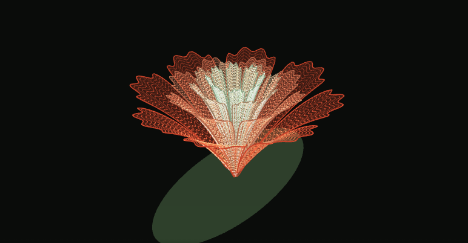
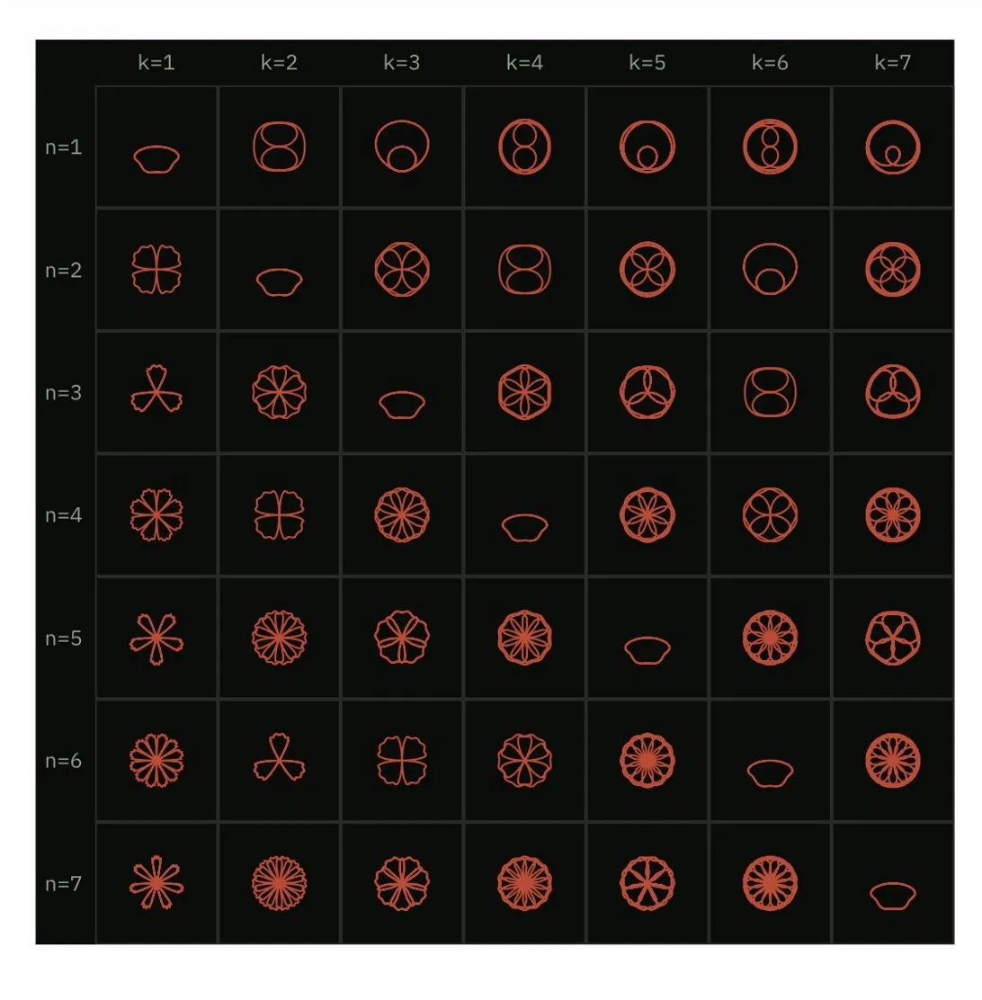
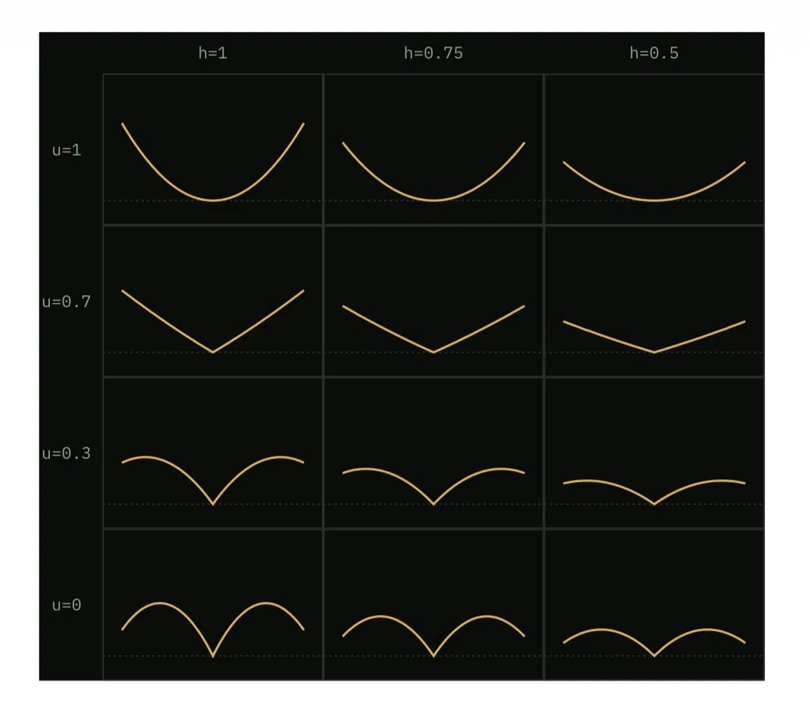
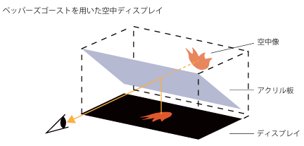
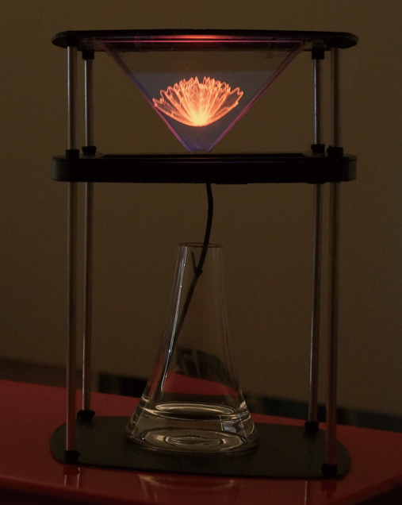

Family Bloom ―
数式の花を、現実に咲かせる
2026年8月13日

もともと構想していた作品
Family Bloomは、画面の中だけで完結させるつもりのないアイデアでした。もともと構想していた作品を、今回プロトタイプとしてブラウザで動かせる形にしています。
仕組み：数式で花の形をつくる
花びらの輪郭（平面形）は、バラ曲線と呼ばれる極座標の方程式を応用した、次の関数で描かれます。
r(θ) = sin(nθ/k) + A·sin(3nθ/k) + B·sin(5nθ/k) + C·sin(7nθ/k)（0≦C<B<A≦1、n・kは任意の自然数）
そこに、花びらの反りやふくらみ（立体形）を決める、もうひとつの関数を重ねます。
z(r) = (r²·u − 2|r|(|r|−1.4)(1−u)) × h（0<u<1、0<h）
n・k・A・B・C・u・hという、たった7つの変数の値を変化させるだけで、無数の花弁の形を作ることができます。
変数ごとの花の形（A=0.25, B=0.12, C=0.07 の場合）


現実の花瓶の上に咲かせる、という構想
このブラウザ版は、あくまで数式で花の形をつくる部分を体験できるプロトタイプで、ここから先の仕組みは実装していません。もともとは、ディスプレイの映像をアクリル板に反射させて空中に像を浮かび上がらせる「ペッパーズゴースト」という手法を使い、数式で描いた花を画面の中だけに収めず、現実の花瓶の上に浮かび上がらせる、という構想を持っていました。実際に、その仕組みを再現した実機プロトタイプも試作しています。


構想の背景
もともとは、何かのきっかけに応じて花の形や成長が変わったら面白いのではないか、というところから考え始めました。たとえば、大人になってから実家に帰る頻度や、実家との距離に応じて、咲く花の形が変わっていくような。
カーネーションの代わりに贈るプレゼントとして――そんな構想を持っていました。